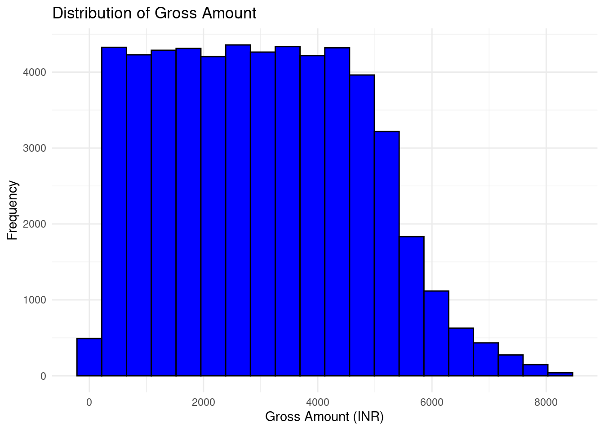
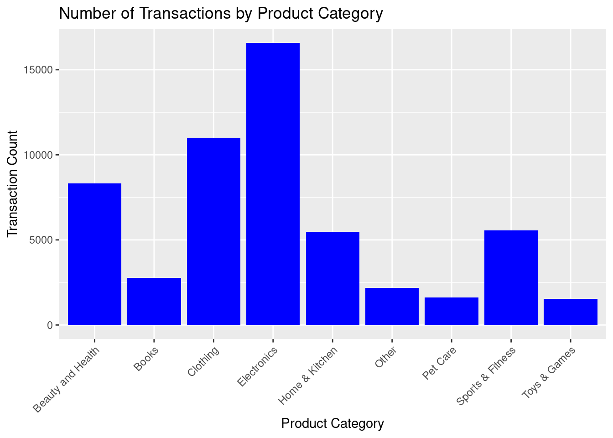
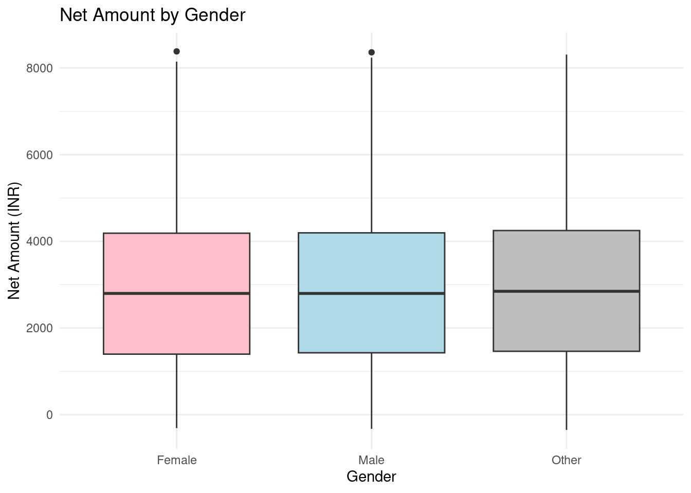
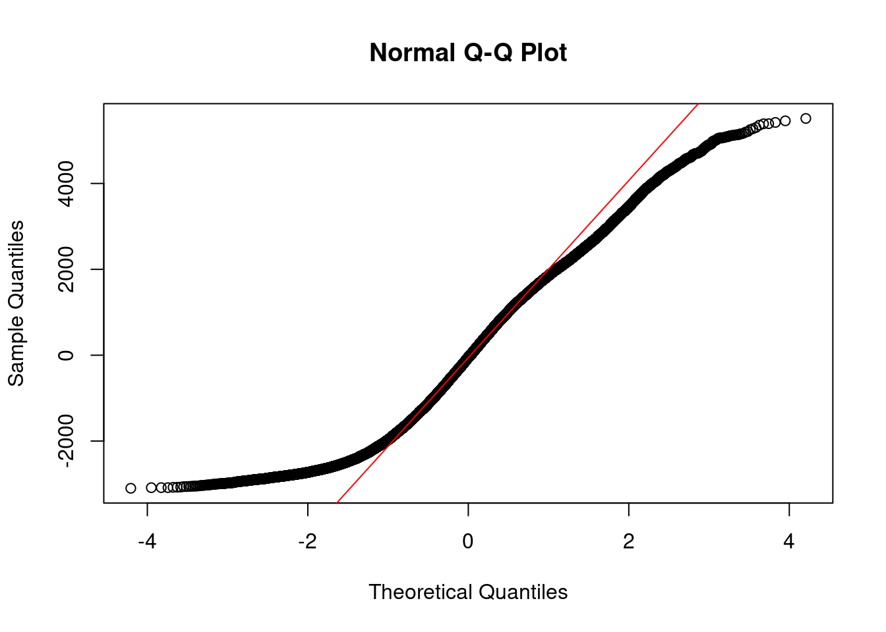

Chapter 10 Capstone Project
10.1 Introduction
10.1.1 Project Overview and Objectives
The main objective of this capstone project is to allow the student apply all the skills and techniques learned through the camp in a comprehensive real-world analysis.
It greatly emphasizes on teamwork, critical thinking and creativity
10.1.2 Group Formation
Participants are divided into 5 groups, each consisting of 5 members. Each group is assigned a different data set. These are the proposed data sets and their links to download them:
- Healthcare Data set
- Retail Sale data
https://www.kaggle.com/datasets/manjeetsingh/retaildataset
- Financial Transaction Data
https://www.kaggle.com/datasets/apoorvwatsky/bank-transaction-data
https://www.kaggle.com/datasets/mlg-ulb/creditcardfraud
Social Media Data
Environmental Data set
https://www.kaggle.com/datasets/sevgisarac/temperature-change
10.2 Project Planning
10.2.1 Defining the problem statement
Using your assigned data set, you will be required to;
- define a clear problem statement to address.
- narrow down on the scope of the project to make it manageable within the given timeframe
- outline your project goals and the expected outcomes
10.2.2 Planning the Analysis WorkFlow
In your groups, you are required to plan the analysis including:
- Data Cleaning and Preprocessing
You will identify potential issues for instance missing values and outliers ,then plan how to address them
- Explanatory Data Analysis
Plan how to conduct the initial exploration of the data set to understand the data structure and key patterns
- Model Selection and Application
Discuss on the potential statistical or machine learning models that could be applied to the data
- Evaluation and Interpretation
Plan how to evaluate the model’s performance and interpret the results.
10.3 Project Execution
10.3.1 Part 1
10.3.1.1 Data Cleaning and Preprocessing
The groups will begin by cleaning and preparing the data sets including;
- Handling missing values
- Correcting inconsistencies in the data set
- Ensuring data is ready for analysis
The instructirs will provide support and guidance as needed, answering questions and help in troubleshooting issues
10.3.1.2 Explanatory Data Analysis(EDA)
The groups will then;
- Perform EDA to uncover insights, identify trends and explore the relationships between variables
- Visualize the data using
ggplot2or any other tool to better understand the data. - Document their findings and decide on the next step in the analysis
10.3.2 Part 2
10.3.2.1 Model Building and Analysis
Each group is required to;
- Select and apply an appropriate statistical or machine learning model to address their research questions
- Train, test and fine-tune the model as needed.
- Emphasize on the interpreting the model outputs, understanding the implications and ensuring the results align with the project goals
10.3.2.2 Evaluation and Insights
The groups will then;
- evaluate the performance of their models using relevant metrics (e.g., accuracy, RMSE, precision, recall).
- discuss on the insights gained from the analysis and how these insights could be applied in a real-world context.
- prepare visualizations and summary reports to effectively communicate their findings.
10.4 Project Presentations and Feedback
Each group will finally present their project that will include;
- An overview of the data set and the problem statement.
- The steps taken during data cleaning, EDA, and model building.
- The key findings, model performance, and final insights.
- Visualizations and any actionable recommendations based on the analysis.
10.5 Example: Ecommerce Project
Load the libraries
Load the data
## 'data.frame': 55000 obs. of 13 variables:
## $ CID : int 943146 180079 337580 180333 447553 200614 668787 933551 414167 889269 ...
## $ TID : num 5.88e+09 1.02e+09 3.81e+09 1.40e+09 8.01e+09 ...
## $ Gender : chr "Female" "Male" "Other" "Other" ...
## $ Age.Group : chr "25-45" "25-45" "60 and above" "60 and above" ...
## $ Purchase.Date : chr "30/08/2023 20:27:08" "23/02/2024 09:33:46" "06/03/2022 09:09:50" "04/11/2020 04:41:57" ...
## $ Product.Category : chr "Electronics" "Electronics" "Clothing" "Sports & Fitness" ...
## $ Discount.Availed : chr "Yes" "Yes" "Yes" "No" ...
## $ Discount.Name : chr "FESTIVE50" "SEASONALOFFER21" "SEASONALOFFER21" "" ...
## $ Discount.Amount..INR.: num 64.3 175.2 211.5 0 439.9 ...
## $ Gross.Amount : num 725 4639 1986 5696 2293 ...
## $ Net.Amount : num 661 4464 1775 5696 1853 ...
## $ Purchase.Method : chr "Credit Card" "Credit Card" "Credit Card" "Debit Card" ...
## $ Location : chr "Ahmedabad" "Bangalore" "Delhi" "Delhi" ...10.5.1 Part 1
Data Cleaning and Preprocessing
We check for missing values in the data set to understand if any imputation or removal is needed. The columns that have missing values so we can decide whether to impute or remove them
## CID TID Gender
## 0 0 0
## Age.Group Purchase.Date Product.Category
## 0 0 0
## Discount.Availed Discount.Name Discount.Amount..INR.
## 0 0 0
## Gross.Amount Net.Amount Purchase.Method
## 0 0 0
## Location
## 0There were no null values in the data set.
The outliers in the Gross.Amount and Net.Amount columns were then identified using IQR method. The removal of outliers ensures a more reliable analysis, particularly for numerical data.
# Outlier detection function using IQR
identify_outliers_iqr <- function(column) {
Q1 <- quantile(column, 0.25, na.rm = TRUE)
Q3 <- quantile(column, 0.75, na.rm = TRUE)
IQR_value <- Q3 - Q1
lower_bound <- Q1 - 1.5 * IQR_value
upper_bound <- Q3 + 1.5 * IQR_value
return(column < lower_bound | column > upper_bound)
}
# Removing outliers
outliers <- identify_outliers_iqr(ecommerce$Net.Amount)
ecommerce_clean <- ecommerce[!outliers, ]Shape of the old ecommerce data set
## [1] 55000 13Shape of the new ecommerce data set
## [1] 54999 13There was only one outlier in the entire dataset that was identified and removed.
The Purchase.Date column needed to be converted to a proper date column
# Convert 'Purchase Date' to Date type
ecommerce_clean$Purchase.Date <- as.Date(ecommerce_clean$Purchase.Date, format="%Y-%m-%d")
# Confirm the operation
str(dplyr::select(ecommerce_clean, Purchase.Date))## 'data.frame': 54999 obs. of 1 variable:
## $ Purchase.Date: Date, format: NA NA ...Explanatory Data Analysis
Explanatory data analysis was performed to understand tge distribution, relationships and the underlying structure of the data set.
The distribution of Gross Amount was plotted
# Histogram for Gross Amount
ggplot(ecommerce_clean, aes(x = Gross.Amount)) +
geom_histogram(bins = 20, fill = "blue", color = "black") +
labs(title = "Distribution of Gross Amount", x = "Gross Amount (INR)", y = "Frequency") +
theme_minimal()
This histogram shows that the data appears to be right-skewed, meaning most transactions occur within the lower range (around 1000-4000 INR), with fewer transactions as the Gross Amount increases. There is a gradual decline in frequency for higher amounts, with very few transactions beyond 6000 INR. The highest frequency is concentrated between 1000 and 4000 INR.
The bar chart to compare the number of transactions across different of product categories in the store was plotted
# Bar chart for Product Category
ggplot(ecommerce_clean, aes(x = Product.Category)) +
geom_bar(fill = "blue") +
labs(title = "Number of Transactions by Product Category", x = "Product Category", y = "Transaction Count") +
theme(axis.text.x = element_text(angle = 45, hjust = 1))
The bar chart shows the number of transactions by product category. Electronics has the highest number of transactions, followed by Clothing and Beauty and Health. Categories like Books, Home & Kitchen, and Other have moderate transaction counts, while categories like Pet Care, Toys & Games, and Sports & Fitness have significantly fewer transactions. The chart highlights which product categories are more popular in terms of transactions
Finally, the distribution of Net Amount spent by gender was plotted on a boxplot.
# Box plot of Net Amount by Gender
ggplot(ecommerce_clean, aes(x = Gender, y = Net.Amount)) +
geom_boxplot(fill = c("pink", "lightblue", "gray")) +
labs(title = "Net Amount by Gender", x = "Gender", y = "Net Amount (INR)") +
theme_minimal()
This boxplot illustrates the distribution of the Net Amount (INR) spent by customers, categorized by Gender (Female, Male, Other). Here’s a brief description:
- Female: The median net amount spent is slightly above 3000 INR, with most of the data falling between 2000 and 4500 INR. There are a few outliers above 8000 INR.
- Male: The median is close to that of females, slightly below 4000 INR. The interquartile range (IQR) is similar, and there are also outliers.
- Other: The distribution follows a similar pattern, with the median around 4000 INR. The spread of data is broader, and outliers are visible above 8000 INR.
The boxplot suggests that, overall, net spending is relatively consistent across genders, with some variations in the range of outliers
10.5.2 Part 2
Model Building and Analysis
In this project, we agreed upon building a multiple linear regression model where the Net.Amount was the target variable and the independent (predictor) variables will include the features that might influence the Net.Amount, such as; Age.Group, Gender, Discount.Availed, Purchase.Method, Product.Category and Location.
Categorical variables like Gender, Age Group, and Purchase Method were then converted into numerical formats.
# Convert categorical variables to factors
ecommerce_clean$Gender <- as.factor(ecommerce_clean$Gender)
ecommerce_clean$Age.Group <- as.factor(ecommerce_clean$Age.Group)
ecommerce_clean$Purchase.Method <- as.factor(ecommerce_clean$Purchase.Method)
ecommerce_clean$Product.Category <- as.factor(ecommerce_clean$Product.Category)
ecommerce_clean$Location <- as.factor(ecommerce_clean$Location)The data was then split into train and test data sets
# Split the data into training (70%) and testing (30%) sets
set.seed(123) # For reproducibility
sample_split <- sample(1:nrow(ecommerce_clean), 0.7 * nrow(ecommerce_clean))
train_data <- ecommerce_clean[sample_split, ]
test_data <- ecommerce_clean[-sample_split, ]The categorical variables converted to numerical were then encoded.
# Encode categorical variables in the training set
train_data_encoded <- model.matrix(Net.Amount ~ Gender + Age.Group + Purchase.Method + Discount.Availed + Product.Category + Location, data = train_data)
train_data_encoded <- as.data.frame(train_data_encoded)
# Keep the Net.Amount column in train set
train_data_encoded$Net.Amount <- train_data$Net.Amount
# Repeat for the test data
# Encode categorical variables in the test set
test_data_encoded <- model.matrix(Net.Amount ~ Gender + Age.Group + Purchase.Method + Discount.Availed + Product.Category + Location, data = test_data)
test_data_encoded <- as.data.frame(test_data_encoded)
# Keep the Net.Amount column in test set
test_data_encoded$Net.Amount <- test_data$Net.AmountBuild the linear regression model
# Build the multiple linear regression model on the training data
model <- lm(Net.Amount ~ ., data = train_data_encoded)
# Summary of the model
summary(model)##
## Call:
## lm(formula = Net.Amount ~ ., data = train_data_encoded)
##
## Residuals:
## Min 1Q Median 3Q Max
## -3100.5 -1451.8 -52.9 1332.8 5515.0
##
## Coefficients: (1 not defined because of singularities)
## Estimate Std. Error t value Pr(>|t|)
## (Intercept) 2922.7304 62.2970 46.916 < 2e-16 ***
## `(Intercept)` NA NA NA NA
## GenderMale 18.7397 21.5887 0.868 0.38538
## GenderOther 66.6799 21.4213 3.113 0.00185 **
## `Age.Group25-45` 67.7744 21.2104 3.195 0.00140 **
## `Age.Group45-60` 36.5292 25.3083 1.443 0.14892
## `Age.Group60 and above` 86.3172 43.0016 2.007 0.04472 *
## `Age.Groupunder 18` 55.5425 42.4655 1.308 0.19090
## `Purchase.MethodCredit Card` 105.1751 42.0126 2.503 0.01230 *
## `Purchase.MethodDebit Card` 104.3915 43.3421 2.409 0.01602 *
## `Purchase.MethodGoogle Pay UPI` 13.7136 56.1214 0.244 0.80696
## `Purchase.MethodInternational Card` 36.2170 55.4604 0.653 0.51375
## `Purchase.MethodNet Banking` 90.0141 48.4290 1.859 0.06308 .
## `Purchase.MethodPaytm UPI` 91.0705 56.7732 1.604 0.10870
## `Purchase.MethodPhonePe UPI` 136.4385 56.1132 2.431 0.01504 *
## Discount.AvailedYes -281.3110 17.5761 -16.005 < 2e-16 ***
## Product.CategoryBooks -38.4254 45.2165 -0.850 0.39544
## Product.CategoryClothing -39.0045 30.0357 -1.299 0.19409
## Product.CategoryElectronics -39.1260 27.7011 -1.412 0.15783
## `Product.CategoryHome & Kitchen` -10.9165 35.7606 -0.305 0.76016
## Product.CategoryOther -20.9221 50.1273 -0.417 0.67640
## `Product.CategoryPet Care` -73.7840 55.9987 -1.318 0.18765
## `Product.CategorySports & Fitness` 12.9042 35.7471 0.361 0.71811
## `Product.CategoryToys & Games` 49.4816 57.0082 0.868 0.38541
## LocationBangalore -60.5951 45.4800 -1.332 0.18275
## LocationChennai -37.2571 50.3080 -0.741 0.45895
## LocationDehradun -45.1176 95.0935 -0.474 0.63518
## LocationDelhi -37.1564 44.1082 -0.842 0.39957
## LocationHyderabad -38.9091 48.1375 -0.808 0.41893
## LocationJaipur -10.5647 64.5081 -0.164 0.86991
## LocationKolkata -53.1287 56.2195 -0.945 0.34465
## LocationLucknow -17.1844 72.5735 -0.237 0.81282
## LocationMumbai -44.7562 43.9977 -1.017 0.30905
## LocationOther 0.1508 74.8008 0.002 0.99839
## LocationPune -42.6380 51.6193 -0.826 0.40880
## LocationSrinagar -49.5176 97.1690 -0.510 0.61033
## LocationVaranasi 35.5776 94.3117 0.377 0.70600
## ---
## Signif. codes: 0 '***' 0.001 '**' 0.01 '*' 0.05 '.' 0.1 ' ' 1
##
## Residual standard error: 1724 on 38463 degrees of freedom
## Multiple R-squared: 0.007814, Adjusted R-squared: 0.006911
## F-statistic: 8.655 on 35 and 38463 DF, p-value: < 2.2e-16Predictions were then performed by the model
## Warning in predict.lm(model, newdata = test_data_encoded): prediction from a
## rank-deficient fit may be misleading## 1 4 9 13 14 15
## 2775.243 3155.867 2934.921 2714.964 2651.550 2759.720Evaluation and insights
The model was evaluated using Mean Squared Error(MSE) and Root Squared Error(RMSE)
# Calculate predictions on the test set
test_predictions <- predict(model, newdata = test_data_encoded)## Warning in predict.lm(model, newdata = test_data_encoded): prediction from a
## rank-deficient fit may be misleading# Calculate MSE and RMSE
mse <- mean((test_predictions - test_data_encoded$Net.Amount)^2)
rmse <- sqrt(mse)
cat("Mean Squared Error (MSE):", mse, "\n")## Mean Squared Error (MSE): 2935271## Root Mean Squared Error (RMSE): 1713.263A QQ plot was used to assess if the residuals follow a normal distribution.

The predicted values have a different pattern(straight-line) with the original values(sigmoid-curve)
10.5.3 Presentation and Feedback
The model identifies some statistically significant predictors, its overall fit is quite average, as indicated by unexpected R-squared values and substantial error metrics (MSE and RMSE). The limited explanatory power suggests that other relevant variables or non-linear relationships may exist and could be explored to improve the model’s performance. Further diagnostics, feature engineering, or transformations might be necessary to enhance predictive accuracy
________________________________________________________________________________